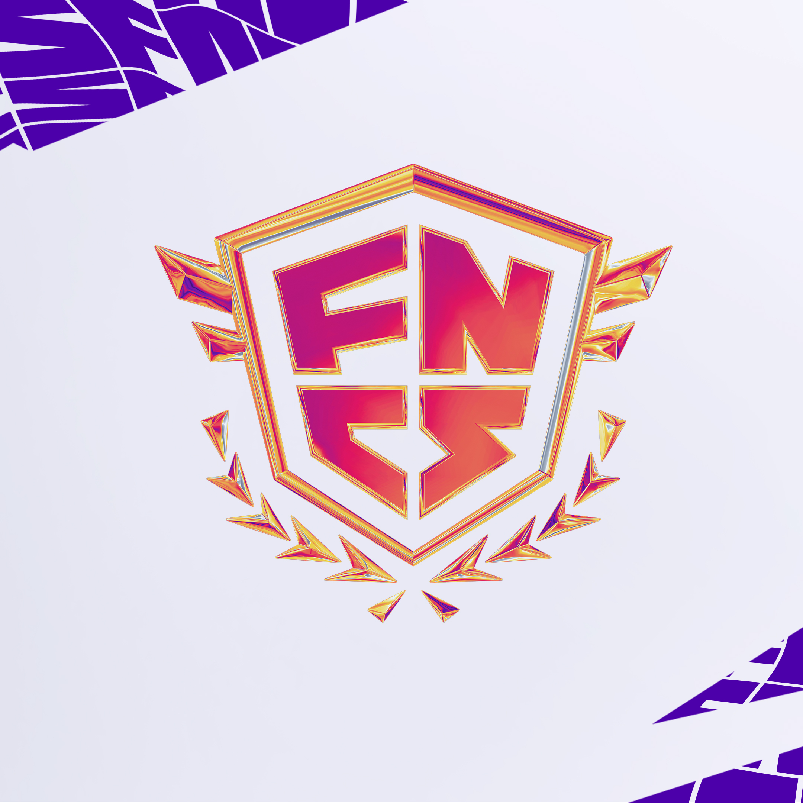
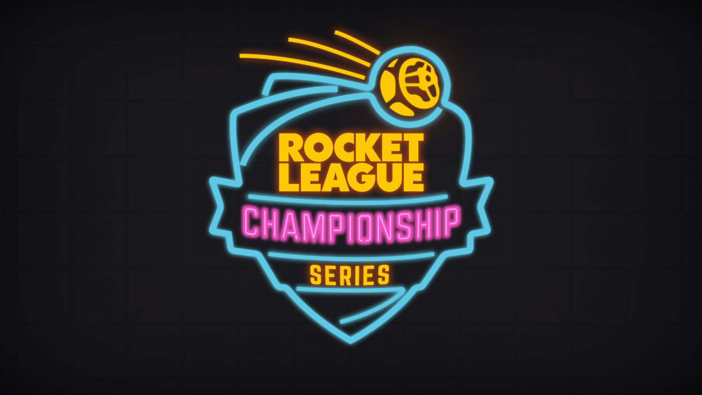
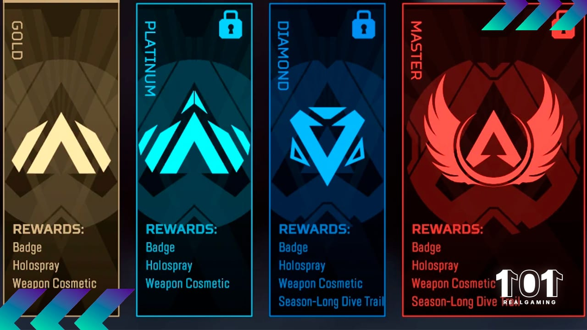

Juegos Competitivos Populares
En el mundo de los videojuegos, los juegos competitivos han alcanzado un nivel de popularidad sin precedentes. A continuación, exploramos algunos de los títulos más jugados en la actualidad.
Fortnite

Fortnite se ha establecido como un fenómeno cultural desde su lanzamiento en 2017. Este juego de Battle Royale se caracteriza por su estilo gráfico único, su mecánica de construcción y un sistema de recompensas por temporadas.
- Plataformas: PC, PS4, Xbox, Nintendo Switch, iOS, Android
- Modos de juego: Battle Royale, Salvar el Mundo, Creativo
Rocket League

Rocket League combina fútbol con vehículos propulsados por cohetes, creando una experiencia de juego única. Se ha ganado una enorme base de fanáticos y es un título clave en los esports.
- Plataformas: PC, PS4, Xbox, Nintendo Switch
- Modos de juego: 1v1, 2v2, 3v3, Dropshot, Rumble
Apex Legends

Apex Legends es un juego de Battle Royale que destaca por sus personajes únicos (llamados "leyendas"), cada uno con habilidades especiales. Desarrollado por Respawn, ha ganado rápidamente popularidad por su jugabilidad fluida y su enfoque en el trabajo en equipo.
- Plataformas: PC, PS4, Xbox, Nintendo Switch
- Modos de juego: Battle Royale, Arenas
Valorant

Valorant es un juego de disparos táctico en primera persona (FPS) que combina elementos de juegos como CS:GO con habilidades especiales de personajes. Este juego ha sido aclamado por su jugabilidad estratégica y sus intensos combates 5v5.
- Plataformas: PC
- Modos de juego: 5v5, Competitivo, Casual
Eventos y Torneos
Los eventos de esports alrededor de estos juegos incluyen torneos mundiales y ligas profesionales. Los eventos de Fortnite y Valorant, por ejemplo, han atraído a millones de espectadores y jugadores, con premios millonarios y una gran cantidad de patrocinadores.